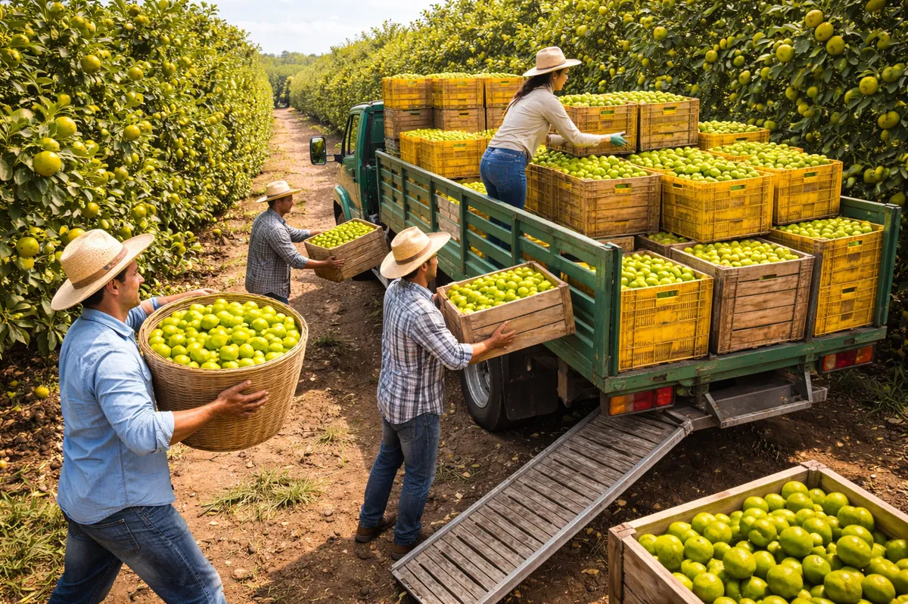
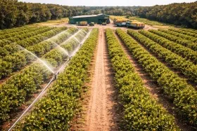

Cultivo tecnificado de limón en Yucatán: productividad, calidad y sostenibilidad
Citrus Limones es un proyecto enfocado en el aprovechamiento de hectáreas de cultivo de limón en Mérida, Yucatán, una región con condiciones de clima y suelo ideales para la producción citrícola de alta calidad.
Basado en un cultivo tecnificado con procesos optimizados de siembra, riego, cuidado fitosanitario y cosecha, el proyecto busca maximizar la productividad y calidad del producto para su comercialización local, distribución y exportación a mercados internacionales.
Procesos optimizados de siembra, riego por goteo, control fitosanitario y cosecha para maximizar calidad y rendimiento por hectárea.
Modelo de producción con ciclos anuales sostenibles que cuidan el suelo y el ecosistema local de Yucatán a largo plazo.
El clima tropical de Yucatán permite cosechas durante los 12 meses del año, garantizando suministro constante al mercado.
El limón mexicano tiene alto reconocimiento en mercados de EUA, Europa y Asia, con demanda creciente y precios competitivos.
Comercialización local, distribución regional, exportación internacional y procesamiento agroindustrial como opciones de salida.
Temperaturas cálidas, humedad controlada y suelos ricos en minerales crean condiciones ideales para cítricos de primera calidad.


Yucatán combina temperatura cálida, humedad controlada y suelos ricos en minerales que crean las condiciones ideales para producir limón de primera calidad con características organolépticas superiores a otras regiones productoras.
Contáctanos para obtener más información sobre oportunidades de desarrollo, comercialización y alianzas estratégicas en este proyecto agroindustrial.